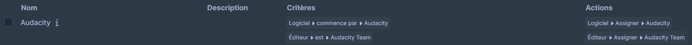
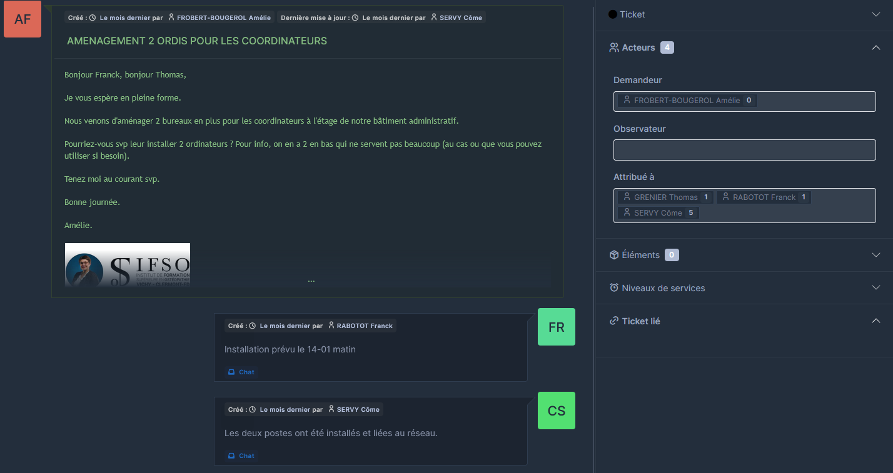

| Informations Complémentaires | |
|---|---|
| Outils : Catalogue Informatique, Excel | |
| Période : 08/11 - 06/12 | |
| Compétences Mises en Oeuvre | |
| - Gérer le patrimoine informatique - Répondre aux incidents et aux demandes d'assistance et d'évolution - Mettre à disposition des utilisateurs un service informatique |
|
GLPI (Gestionnaire Libre de Parc Informatique) est une solution open-source complète de gestion des ressources informatiques et des services d'assistance. Il permet de centraliser et d'automatiser de nombreuses tâches liées à la gestion d'un parc informatique, telles que:
Une des missions m'ayant été confiées depuis mon arrivée au pôle universitaire a été la configuration d'un serveur GLPI. Les objectifs principaux de la configuration de ce serveur ont été d'avoir un inventaire le plus complet possible du parc informatique du pôle, ordinateur, switch, borne WIFI etc.
Les règles d’assignation logicielle de GLPI filtrent les logiciels remontés par les agents GLPI lors de l’inventaire des machines. Elles permettent de regrouper automatiquement les logiciels dans la section correspondante, facilitant ainsi leur gestion.
La mise en place du service de ticketing a commence par la configuration de l'envoi de mail automatique lors de la création d'un ticket. Ensuite, la configuration des collecteurs mails.
Dès qu'un e-mail nécessitant un support ou une intervention est reçu, il suffit de le déplacer dans un dossier spécifique de notre boîte mail. GLPI, configuré pour scanner ces dossiers toutes les 10 minutes, va alors créer un ticket à partir de l'e-mail, assignant automatiquement l'expéditeur comme demandeur.
Il ne reste plus qu'à attribuer un technicien pour prendre en charge l'intervention, qui pourra communiquer directement via GLPI. Le serveur GLPI enverra ensuite toutes les mises à jour du ticket au demandeur, permettant ainsi de centraliser l'historique des interventions et de leurs échanges.
